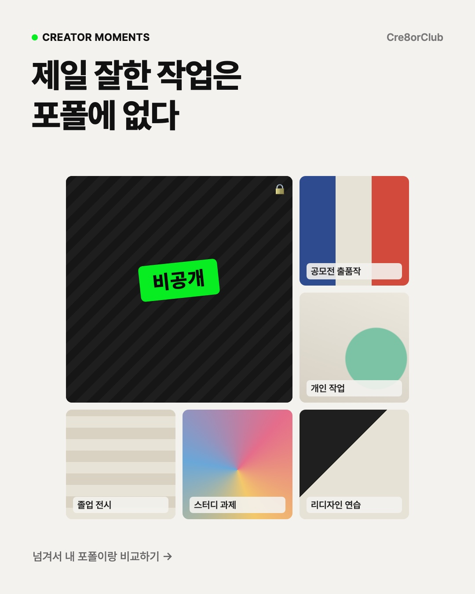
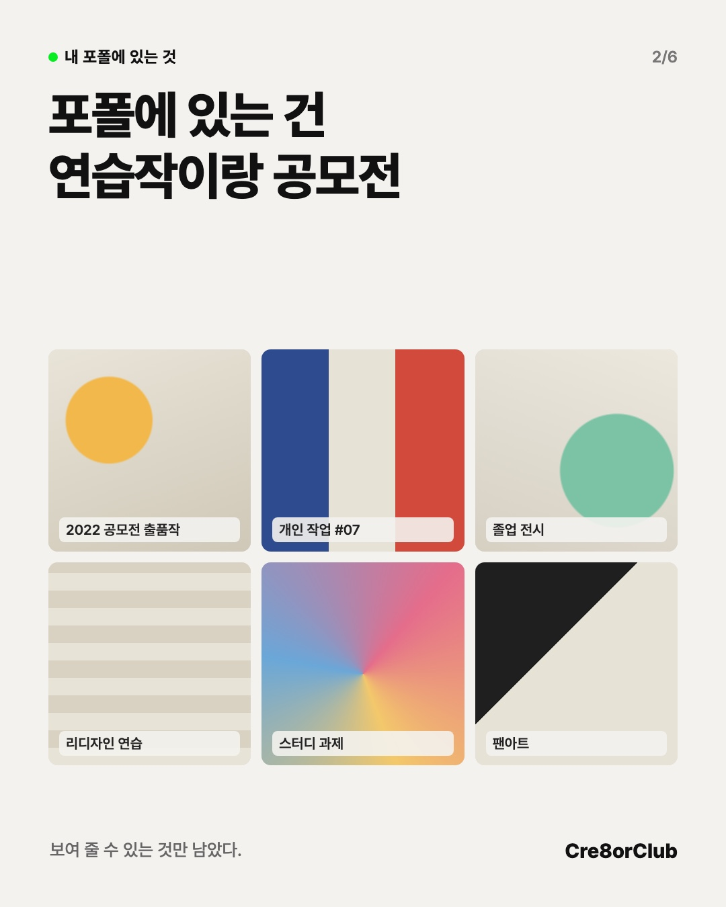
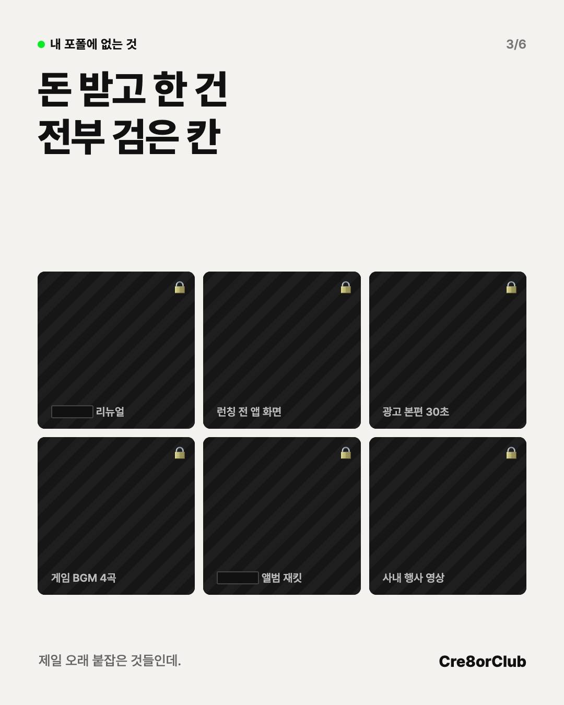
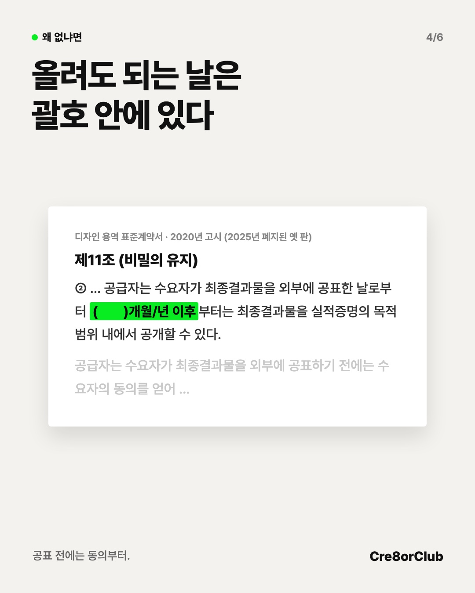
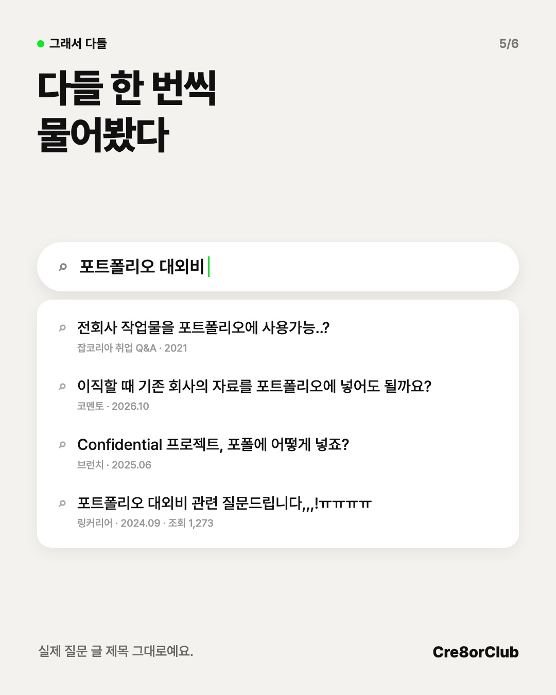
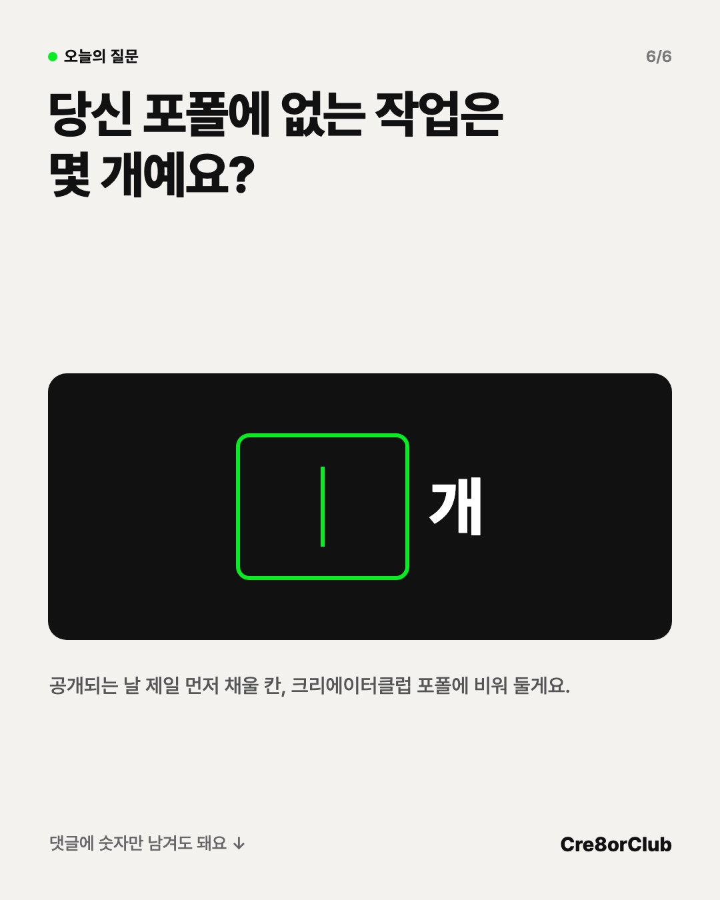

대외비라 포폴에 못 올린 작업 이야기예요. 샐리 원고 20편과 지금까지 만든 시안 어디에도 없던 소재이고, 틀(가려진 포폴 칸 · 계약서 · 검색창)도 처음 써요. 그림은 새로 그렸어요. 아직 시안이고 인스타에는 올리지 않았어요.






사진을 옆으로 밀거나 ‹ › 를 누르면 6장을 넘겨 볼 수 있어요
질문 글이 취업 준비·이직하는 디자이너 쪽에 몰려 있어요. 영상·음악 하는 분들이 「내 얘기」로 받을지가 가장 약한 지점이에요.